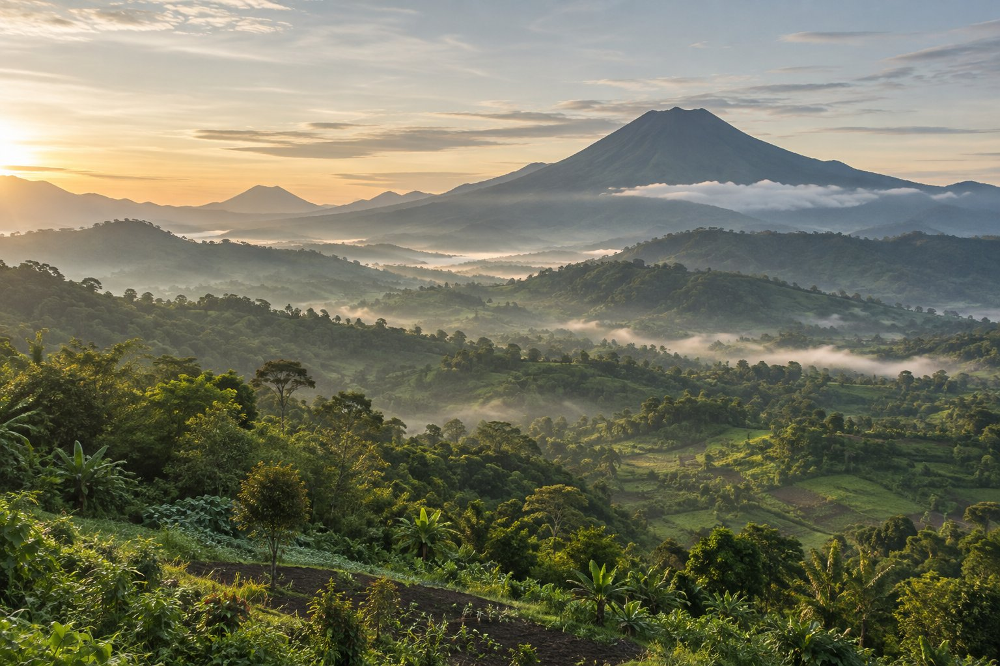
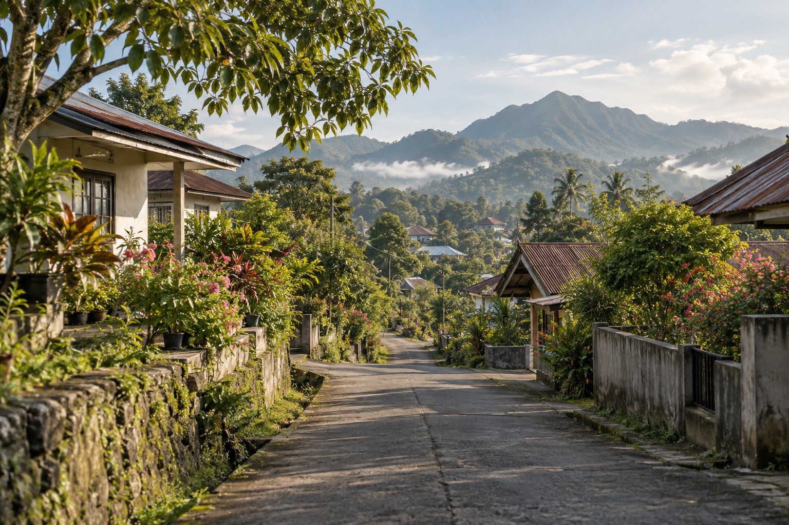

Selamat datang di Kamasi 1
Mengenal Kamasi,
Lebih Dekat.
Kenali masyarakat, sejarah, potensi lokal, dan kehidupan di Kamasi 1, Kota Tomohon, Sulawesi Utara.
Kamasi 1 Tomohon, Sulawesi Utara

Lanskap ilustratif Tomohon
X.XXX+Penduduk
XXX+Kepala Keluarga
XX+UMKM Lokal
XXFasilitas Umum
01 / Profil Kamasi 1
Mengenal wilayah,
memahami warganya.
Di Kamasi 1, cerita tentang tempat dan masyarakat berjalan beriringan. Kenali gambaran singkat wilayah ini sebelum menjelajahi bagian lainnya.

Konten & data contoh
Sekilas tentang
Sekilas tentang
Kamasi 1.
Kamasi 1 adalah bagian dari Kota Tomohon, Sulawesi Utara. Contoh narasi ini menggambarkan wilayah yang dekat dengan kehidupan warga, lingkungan tempat tinggal, dan aktivitas lokal sehari-hari.
- Wilayah
- Kamasi 1
- Kota / Provinsi
- Tomohon / Sulawesi Utara
- Luas wilayah (contoh)
- ± 1,8 km²
- Lingkungan (contoh)
- 4 lingkungan
Informasi dan visual pada bagian ini masih berupa contoh dan dapat Anda perbarui dengan data serta foto resmi Kamasi 1.